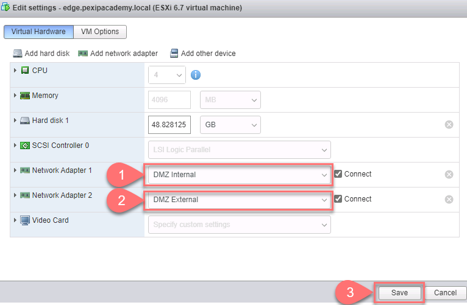
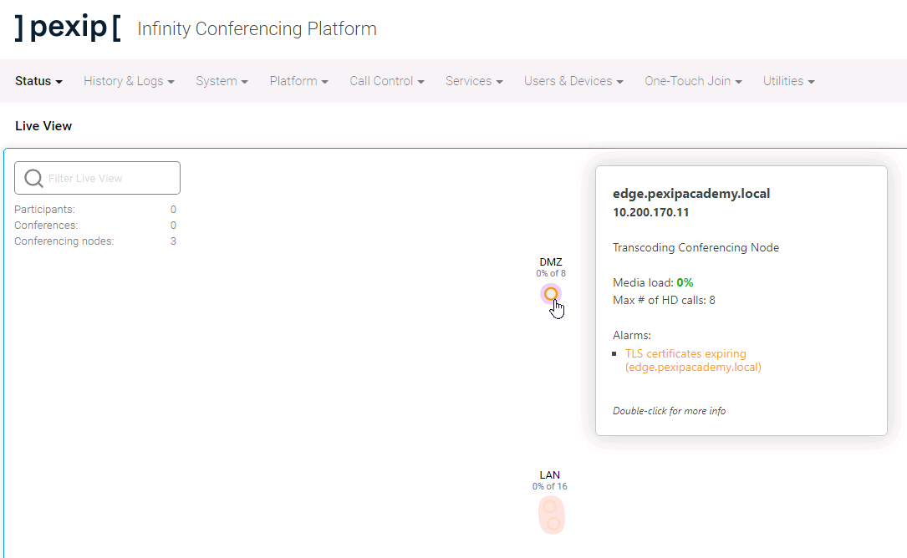
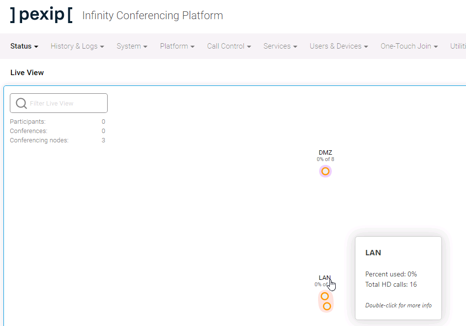

Suggested completion time: 15 minutes
Use section #3 and section #5 of the lab sheet.
Completing these steps on the Jumpbox should make uploading the OVA file to the ESXi host much quicker.
Go to Platform --> Conferencing Nodes and click Add Conferencing Node:

This video outlines some additional configurations you can apply to a Conferencing Node, including setting the role type. We will walk you through the exact process to change these settings in the next lab, but feel free to look now.
The screenshots below should look like your Infinity system and show that you have successfully deployed your nodes into the correct locations.
Live View showing DMZ node in transcoding role:
As you hover over different elements in Live View, you will see information about the object. For example, if you hover over the node in the DMZ location, you will see the node's details summarised.

Live View showing LAN location capacity:
Hovering over a location, you will see its summarised details.

As with many systems, there are multiple ways you could achieve the same result. This video looks at deploying a node, location, and some system services, all in one step.